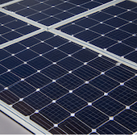
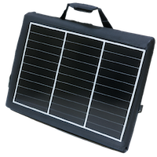

Welcome to SunVault! This GCSE D&T project aims to solve the lack of awareness and understanding about renewable energy resources by promoting an awareness of renewable energy.
The lack of awareness and understanding about renewable energy resources among the general public limits demand for renewable energy resources and maintains a reliance on unsustainable energy sources like coal, oil and gas which contribute to environmental problems. Promoting awareness of renewable energy is crucial to increase the adoption of clean energy , reducing CO2 emissions and decreasing dependence on limited resources.
To solve this problem, I aimed to create a practical everyday solar powered device focused on promoting awareness of renewable energy that is functional, aesthetic and sustainable. I conducted a lot of research into the contextual challenge and possible solutions through surveys and in- depth research into Solar energy and specific materials and processes. The result of a lengthy ideation phase, in which I critically evaluated each potential solution and an iterative design process, supplemented by substantial research and adjustments along the way was SunVault, the world's first Solar- powered briefcase!
 2023 Naa'il Khokhar (68349_4240). All rights reserved.